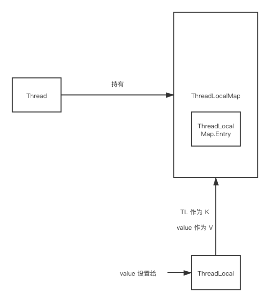

讲到 Handler 或者 Java 的内存模型，那么有一个类不能不提，那就是 ThreadLocal。
最早接触 ThreadLocal 是在 Looper 中，其有一个静态变量：
static final ThreadLocal<Looper> sThreadLocal = new ThreadLocal<Looper>();
在其起始方法：prepare 中
private static void prepare(boolean quitAllowed) {
if (sThreadLocal.get() != null) {
throw new RuntimeException("Only one Looper may be created per thread");
}
sThreadLocal.set(new Looper(quitAllowed));
}
主要就是新产生一个 Looper ，并设置到 sThreadLocal 中。
那么大致可以有个猜测。既然能保证每个线程都是独一份数据，那么必然是一个 Map 且 key 为当前线程。
由于每个线程当中，handler 很多 但是， Looper 和 MessageQuene 是唯一的，那用 ThreadLocal 来存储 Looper 是再合适不过的事情。
同时在 Looper 进行构造的时候，其对应 Thread 和 MessageQuene 都会进行相应的创建并与 Looper 绑定到一起。更能说明我们的猜想。
再看下 get 和 set 方法中都有什么：
public T get() {
Thread t = Thread.currentThread();
//获取 map
ThreadLocalMap map = getMap(t);
if (map != null) {
// 获取结点上的值
ThreadLocalMap.Entry e = map.getEntry(this);
if (e != null) {
@SuppressWarnings("unchecked")
T result = (T)e.value;
return result;
}
}
// 当获取失败时 返回初始值 由子类来定义
return setInitialValue();
}
public void set(T value) {
Thread t = Thread.currentThread();
//获取 map
ThreadLocalMap map = getMap(t);
if (map != null)
map.set(this, value);
else
createMap(t, value);
}
// 创建一个 ThreadLocalMap
void createMap(Thread t, T firstValue) {
t.threadLocals = new ThreadLocalMap(this, firstValue);
}
ThreadLocalMap 是在 Thread 中已经定义好的。我们看下 Thread 中，关于 ThreadLoaclMap 的内容：
// Thread
/* ThreadLocal values pertaining to this thread. This map is maintained
* by the ThreadLocal class. */
ThreadLocal.ThreadLocalMap threadLocals = null;
/*
* InheritableThreadLocal values pertaining to this thread. This map is
* maintained by the InheritableThreadLocal class.
*/
ThreadLocal.ThreadLocalMap inheritableThreadLocals = null;
private void init2(Thread parent) {
this.contextClassLoader = parent.getContextClassLoader();
this.inheritedAccessControlContext = AccessController.getContext();
if (parent.inheritableThreadLocals != null) {
this.inheritableThreadLocals = ThreadLocal.createInheritedMap(
parent.inheritableThreadLocals);
}
}
Thread 中存在 threadLocals inheritableThreadLocals 两个成员变量，后者在创建的时候继承于父线程。而前者则完全没有初始化。
真正的初始化在于：ThreadLocalMap.createMap 方法。至此我们可以大致画出 整个 ThreadLocal 是怎么成为实现线程唯一数据的数据结构的。 
简而言之就是读取一个 ThreadLocal 时，去 Thread 中找到 ThreadLocalMap ，读取这个 ThreadLocal 和其相应的 value。
注意：有一种说法在线程池中使用 ThreadLocal 可能造成内存泄漏的问题。Entry继承了WeakReferenceexpungeStaleEntry 中，判断如果 staleSlot 位置为空，则会自动来释放内存，所以在我看来是不会那么容易发生的。假如创建了一个 ThreadLocalMap，同时set有对象，但是好长时间之后都没有进行读取操作，那么发生GC之后，那么还是会发生泄漏的。
个人认为影响不大。